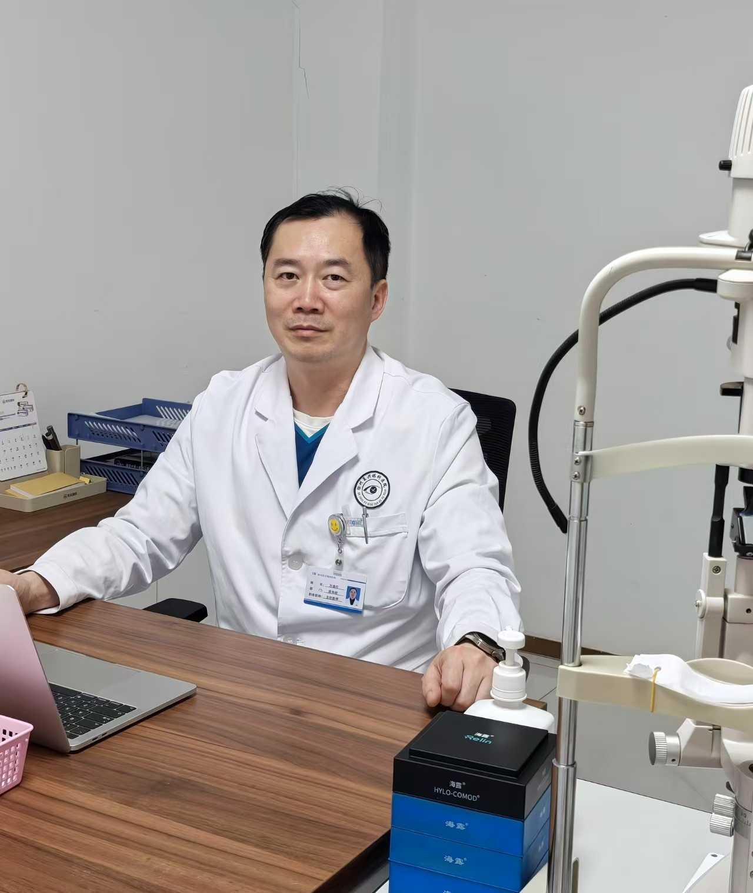
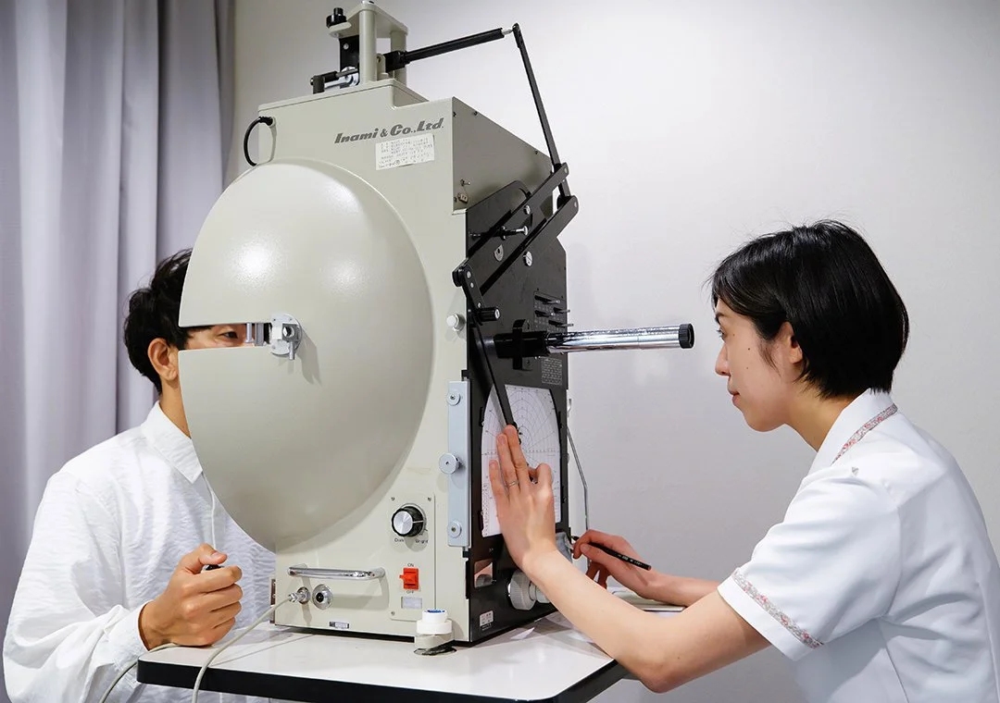
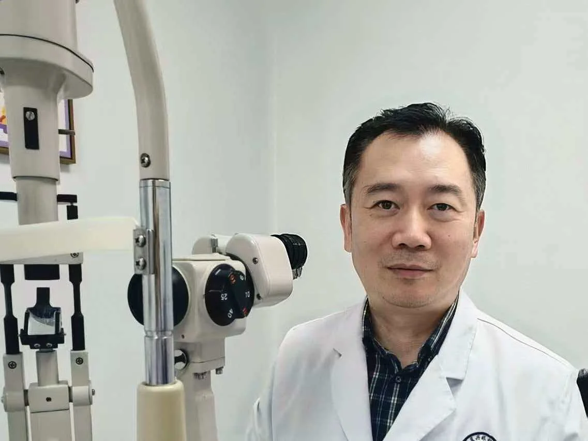

电话
电话Health for all eyes
为了所有人的眼睛
健康。
Health for all eyes
从患者角度出发
提供贴心的医疗和服务。
Health for all eyes
守护您和家人的
眼睛健康。
滚动
关注您的眼睛健康
"眼睛健康"
是感受幸福人生的重要元素。
万道红屈光性白内障工作室自成立以来，一直致力于提高诊疗技术，积极引进最佳设备，满足地区居民各种眼部问题的"治愈"愿望。
我们认为医疗的基本是"与患者设身处地换位思考的医疗"。为此，我们认为所有员工都必须始终是您身边的最好的陪伴。
白内障和手术→
-
白内障工作室门诊
使用国内先进检测设备详细检查您的白内障及眼部情况，使用最新手术设备，进行微创屈光性白内障手术，可以日间或住院手术。
-
眼底病的门诊及手术
使用最新手术设备，检查和进行玻璃体手术。
-
屈光手术
使用最新手术设备，进行近视、散光、老视手术。
-
青少年视光门诊及手术
使用最新手术设备，进行屈光不正的矫治和斜视手术。
-
眼表及眼外伤门诊及手术
胬肉、倒睫眼睑肿物等诊断及手术。
-
医疗美容及面部注射
医疗美容手术如眼袋 双眼皮 提眉等面部手术；注射美容除皱和填充等。
-
门诊激光治疗
我们为糖尿病视网膜病变、视网膜静脉阻塞、视网膜裂孔、后发性白内障等提供激光治疗。
-
玻璃体注射
我们为老年性黄斑变性、视网膜静脉阻塞、糖尿病性视网膜病变等提供玻璃体注射治疗。玻璃体注射可以当日完成。
工作室特色


先进的设备齐全
我们能够进行包括白内障在内的手术治疗。配备先进的医疗设备。我们致力于建立能够进行适当诊断和治疗的体系。我们也进行大量的白内障手术和视网膜玻璃体手术。
了解更多→发展需要合作
合作信息工作室正在寻找合作伙伴。
欢迎随时咨询。